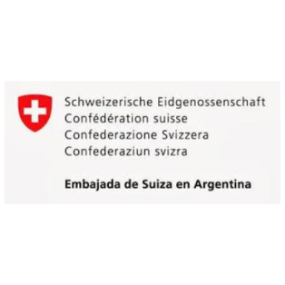
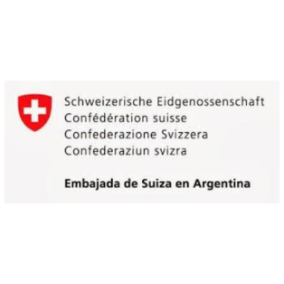

Nuestra Misión
En Cruzada Patagónica trabajamos para garantizar el acceso a la
educación de jóvenes rurales, construyendo oportunidades donde más
se necesitan. Nuestro compromiso es transformar vidas a través de
escuelas rurales que brindan formación integral, herramientas de
calidad y espacios acogedores para su desarrollo.
¡Únete a nuestra causa y sé parte del cambio!
Nuestra Visión
En la Fundación Cruzada Patagónica soñamos con una Patagonia donde todas las comunidades rurales tengan acceso a educación de calidad y desarrollo integral. Desde nuestra creación, hemos beneficiado a más de 1,500 estudiantes a través de centros educativos gratuitos y hemos impulsado más de 200 proyectos productivos que han mejorado la calidad de vida de las familias. Trabajamos para empoderar a los pobladores más vulnerables mediante oportunidades educativas y productivas, adaptadas a su realidad. Queremos inspirar a las nuevas generaciones a superar barreras y construir juntos un futuro sostenible.
Instituciones
Agradecemos a cada una de estas instituciones que nos vienen acompañando año a año.
 
